白いポラロイドが、
長押しで
浮かび上がる。
A blank Polaroid that
develops in your hand.
POLACAM で撮ると、仕上がりは真っ白なプリント。写真アプリで長押しすると、Live Photo でじわっと写真と昭和のLCD日付が浮かび上がります。現像の前には、手書きやキーボードでひとことを。 Shoot with POLACAM and you get a blank white print. Press and hold it in Photos, and the picture — with a retro LCD date — slowly rises up as a Live Photo. Before it develops, add a note by hand or with the keyboard.
iPhone / iOS 17+ · すべて端末内で処理 · 写真が外部に送られることはありません iPhone / iOS 17+ · 100% on-device · Your photos never leave your phone
撮って、書いて、待つ。Shoot. Write. Wait.
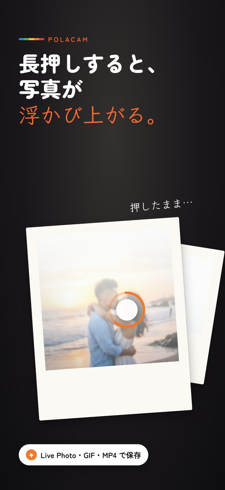
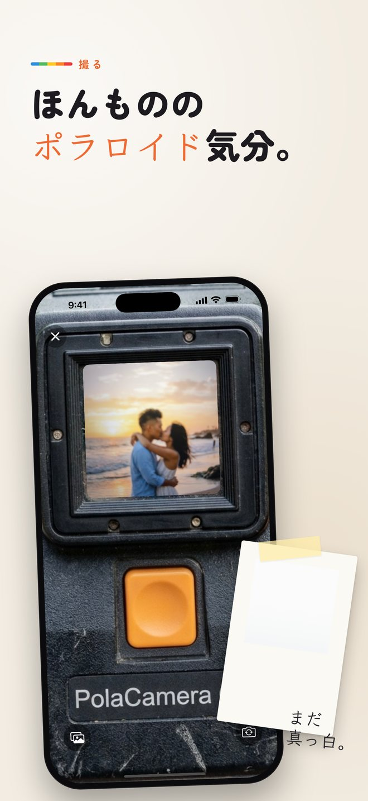
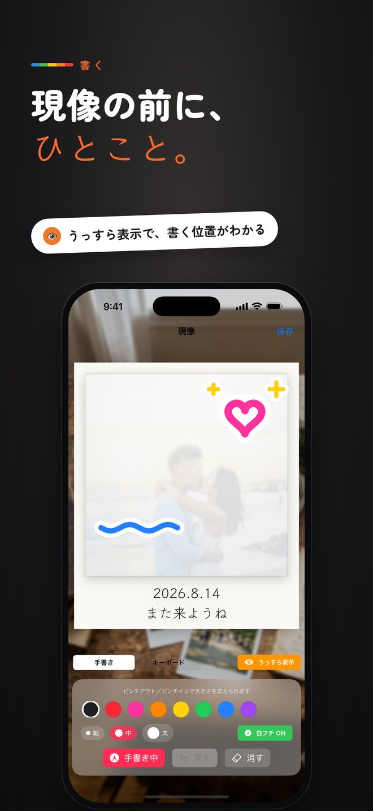
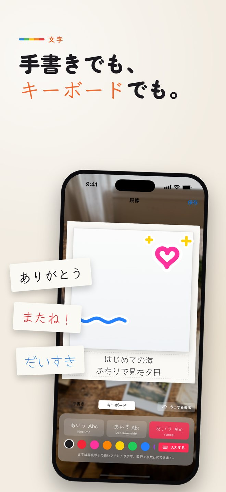
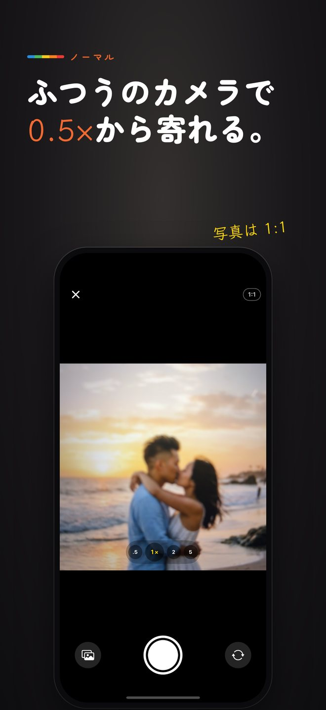
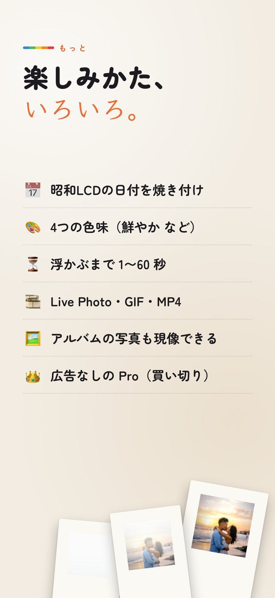
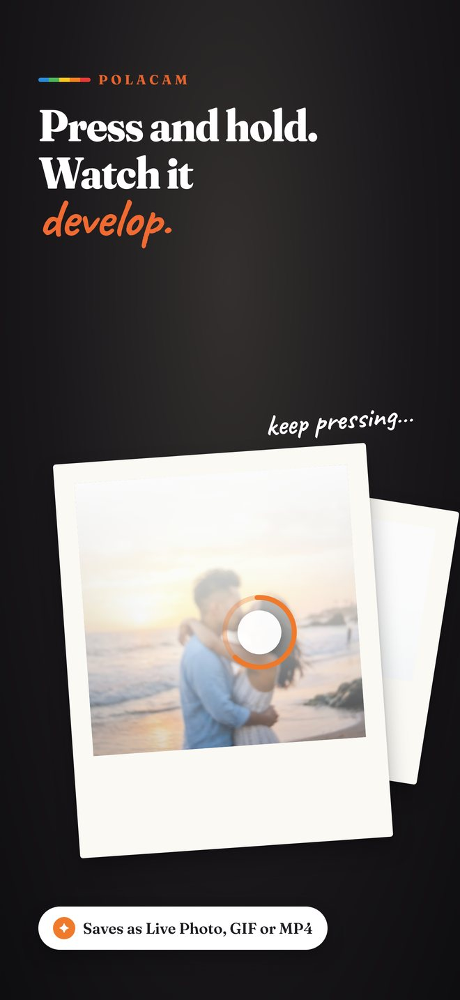
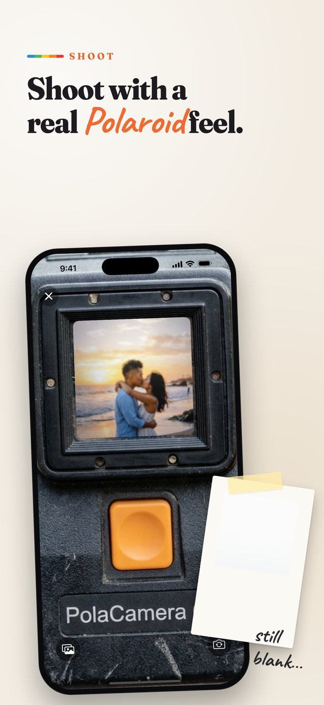
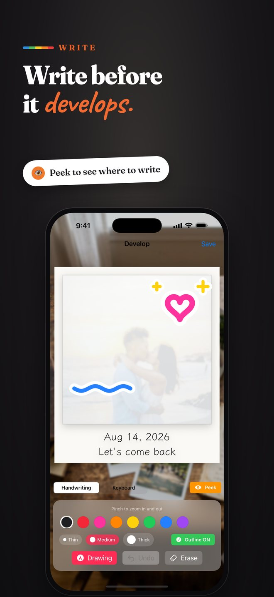
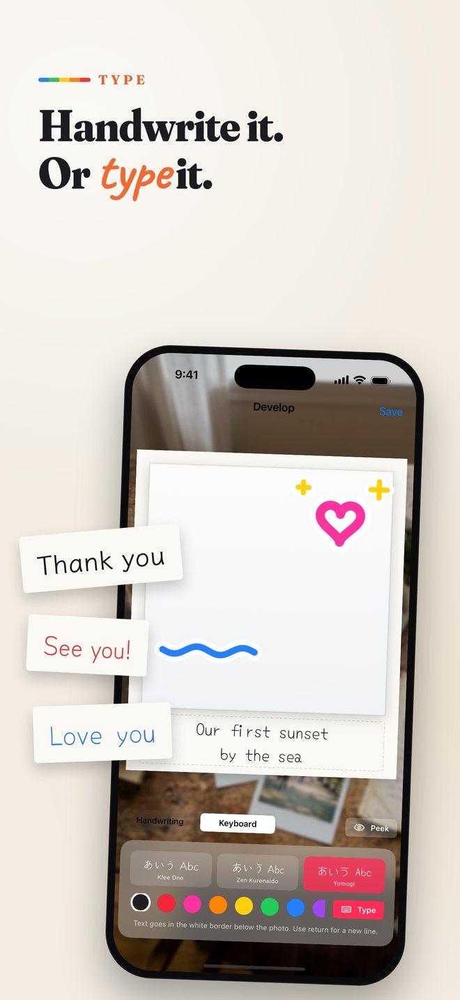
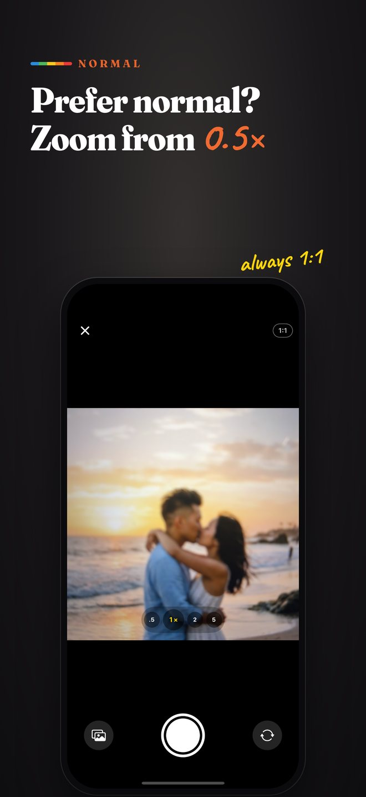
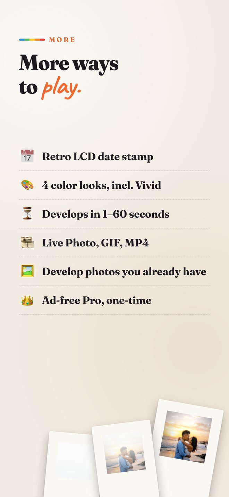
Live Photo と長押しのことLive Photos & the long press
ちょっと分かりにくいところを、順番に。The slightly confusing part, step by step.
保存されるのは「白い表紙」It saves a white “cover”
写真アプリの一覧で見えるのは、まだ現像されていない真っ白なプリント。これが Live Photo の表紙（静止画）です。In your library you see a blank, undeveloped print. That's the cover — the still image — of a Live Photo.
中に「浮かび上がる動画」A short video lives inside
Live Photo は、1枚の写真の中に数秒の動画が入った iPhone の写真。POLACAM は、写真がじわっと現れる様子をその動画に入れます。A Live Photo is an iPhone photo with a few seconds of video inside. POLACAM puts your picture slowly appearing into that video.
指で押したままにすると現像Press and hold to develop
写真アプリでその写真を開き、画面を指で押したまま（長押し）にすると動画が再生されて写真が浮かび上がります。離すと白に戻ります。Open it in Photos and keep your finger pressed on the screen. The video plays and the photo develops. Let go and it turns white again.
インスタントカメラの楽しさを、iPhoneに。The joy of instant film, on iPhone.
ポラロイド風か、
ノーマルかA Polaroid camera — or a normal one
ファインダーをのぞいてオレンジのシャッターを押すポラロイド風と、iPhone のカメラのようにズームできるノーマルを設定で選べます。撮るとカメラからプリントがジーッと出てきます。Pick a Polaroid-style camera with an orange shutter, or a normal iPhone-style camera with zoom. Either way, the print slides out of the camera after each shot.
- ノーマルは 0.5× / 1× / 2× / 望遠とピンチズームNormal mode: 0.5× / 1× / 2× / telephoto and pinch zoom
- 写真はいつも 1:1 の正方形Always a 1:1 square
- アルバムの写真を選んで現像することもDevelop photos you already have
現像の前に、ひとことWrite before it develops
まだ真っ白なプリントに、指で手書き。下の白いフチには、キーボードで数行のメッセージも入れられます。目のボタンで写真をうっすら透かせば、どこに書くか迷いません。Handwrite on the still-blank print, or type a few lines in the white border. Tap the eye button to see the photo very faintly so you know where to write.
- 8色のペン・3つの太さ・白フチ。線は自動でなめらかに8 pen colors, 3 widths, white outline — strokes are smoothed automatically
- 手書き風フォント3種類（Klee One / Zen Kurenaido / Yomogi）3 hand-lettered fonts (Klee One / Zen Kurenaido / Yomogi)
4つの色味4 color looks
ポラロイド・ハイキー・鮮やか・通常から選べます。Polaroid, High-key, Vivid or Normal.
昭和のLCD日付Retro LCD date
オレンジの7セグ日付を焼き付け。表示の形も選べます。Burn in an orange 7-segment date, in the style you like.
浮かぶまで 1〜60 秒1–60 s to develop
じっくり待つか、すぐ見るか。現像の時間を選べます。Choose how long the reveal takes.
Live Photo / GIF / MP4
送り先に合わせて書き出し形式を選べます。Pick the export that suits where you share.
挿絵つきの使い方Illustrated guide
起動時と設定から、動く挿絵で使い方を確認できます。An animated guide at launch and in Settings.
すべて端末内100% on-device
撮影も現像も端末内で完結。外部に送信されません。Everything runs on your phone. Nothing is uploaded.
白い一枚に、思い出をそっと。Tuck a memory into a white print.
POLACAM は App Store で公開中です。POLACAM is available on the App Store.